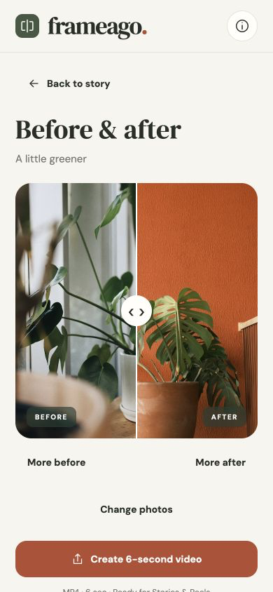

Start with a photo.
Take a picture or choose one from your library. Add a title or note only when you want to.
Your private photo journal
The things you grow, make, and become deserve a little space. Keep a photo today. Come back when things change.
Free · No account · No ads
Made for iPhone and iPad. Preparing for the App Store.
Meet Frameago →
Take a picture or choose one from your library. Add a title or note only when you want to.
Keep dated moments in a story, then slide between two photos to notice the details.
Export an image or a six-second vertical MP4. Save it to Photos or share with an app you choose.
Your photos and notes stay on your device. No account, advertising, analytics, or cloud sync. Save comparisons you want to keep before uninstalling; exports are not a full journal backup.